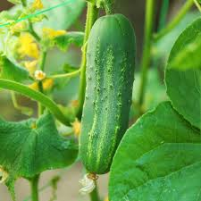

Cucumbers are refreshing vegetables belonging to the Cucurbitaceae family. Native to South Asia, they are now grown worldwide and are known for their high water content (about 95%), making them excellent for hydration and cooling the body.
Cucumbers grow best in warm seasons with temperatures between 18°C and 30°C. Warm weather supports rapid growth, flowering, and healthy fruit formation. Cold conditions slow growth and reduce yield.
Cucumbers have high market demand, short growth duration, and good profit potential. They are easy to grow, require less maintenance, and are suitable for both home gardens and commercial farming.
| Factor | Requirement |
|---|---|
| Best Season | Summer / Warm Climate |
| Soil Type | Well-drained sandy loam soil |
| Temperature | 18°C – 30°C |
| Water Requirement | Regular but moderate |
| Sunlight | 6–8 hours daily |
| Harvest Time | 45–60 days |